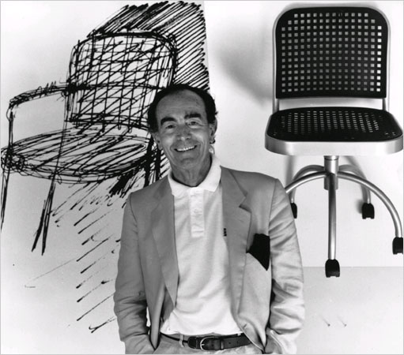

Vico Magistretti
Vico Magistretti, who has died in Milan aged 85, was one of the outstanding industrial designers of his generation. His lights, chairs, tables and sofas grace homes and offices across the world. And he was not just a designer, but also a highly successful architect and a generous teacher.
Born in Milan, the son of an architect, Magistretti studied during the second world war in Italy and Switzerland and graduated from the Politecnico di Milan in 1945. He soon came under the influence of the architect Ernesto Nathan Rogers, whose humanist ideas for the reconstruction of postwar Italy inspired a whole series of intellectuals. At that time Magistretti took part in work on the extraordinary experimental neighbourhood on the edge of Milan known as QT8, where a group of architects and planners were given complete freedom. Magistretti built its "poetic" round church. Everything seemed possible in the Milan of the 1940s and 1950s, and architects and planners of the quality of Magistretti, Ignazio Gardella and Rogers (with the BBPR group) collaborated on working-class neighbourhoods, including an estate for Pirelli workers. These stand out even today for the humanist qualities of their design, and for their green space.
It was only in the 1950s that Magistretti's skill as a designer was unleashed. Working with the craftsmen and entrepreneurs who had long produced furniture in an area to the north of Milan, Magistretti saw possibilities for a new series of well-designed, mass-produced goods. His first great success came with the world famous Carimate chair produced by the Cassina company, headed by Cesare Cassina. The chair was a bestseller for years and mixed rural simplicity (the straw of the seat) with urban sophistication. There were the smooth lines of the wooden supports and legs, the colour, the pop-art bright red frame and elements of Scandinavian design.
Magistretti had a close relationship with Cassina and had designed his luxurious villa (1964-65) in the town of Carimate, near Como. The series of beautiful, sleek villas in the Brianza hills around Milan built by Magistretti were later described as "Palladio in Brianza".
Magistretti began to work directly with Cassina after 1960, experimenting with ideas and production techniques in the company's workshops and factories. Over a period of 30 years, Magistretti's work with Cassina produced a number of other classics, including the Maralunga sofa (1973). These items were inspired by an almost functionalist simplicity, combined with the smooth lines of Italian style that were to become so popular across the world.
Magistretti's long collaboration with Cassina was based on the ability to experiment, to promote ideas, to work directly with artisans and producers. As Magistretti himself put it "from the beginning ... we worked together, in a way which is unique in the world ... we discussed projects together from the start. I never produced finished designs ... the design grew out of discussions, after looking at the technology available, the machines which the company used." Magistretti was a key figure in a group of designers who, in this period, began to operate with "a real new culture of interior design", which affected and shaped the living spaces of millions of people. Not trained as a designer, he adopted an unorthodox and intensely practical approach. He worked closely with producers, scribbling ideas on scraps of paper and even the back of bus tickets before taking them through to the final stages of production.
Later, in the late 1960s, Magistretti was once again involved in the transformation of Milan. This time he worked with his great friend Luigi Caccia Dominioni on Milano-San Felice, the first out-of-town, middle-class neighbourhood, with its hidden traffic, horseshoe form and garden city qualities. This concept was to be copied in other similar neighbourhoods all over Italy, but often to a much lower quality, in the 1970s and 1980s.
Despite the huge success of his design work from the 1960s onwards, Magistretti continued to work as an architect, producing some extraordinary (and much undervalued) buildings in Milan and in other parts of Italy.
Twelve of Magistretti's projects are now housed in the permanent design collection of Moma, in New York, including his famous lamps and his one-piece Selene plastic chair, and he won numerous awards across the world for his work. He thrived on simplicity and elegance, where the complexities of production were hidden. His Eclisse lamp, for example, disappears into itself, hiding both the light and the lamp structure itself (all under the user's control). He drew from Milanese culture in his desire to realise projects. Very few of his ideas went unproduced.
A man of the world, Magistretti adored Copenhagen and London and taught for 20 years at the Royal College of Arts, where he was nominated as a royal designer. He was a fine golf player (with a handicap of 9) and a strong supporter of Inter. But he felt uneasy in the brash, showy Milan that emerged in the 1980s primarily as a fashion city. He was a ferocious critic of the "new Italy" (while maintaining a strong affection for his city) and admitted to "hating television". Tall, elegant and witty, I saw him charm an audience in London just a couple of years ago, as he gently admonished a young, fussy, post-modern designer for his work. His modesty was exemplified by his refusal to publicise his design of his own house, and he joked with students that he filled his home with his own furniture "because they give it to me for free". His legacy lies in the millions of stylish common objects combining form and function which surround us in our everyday lives.
He is survived by his son, Stefano, and daughter, Susanna. His wife Paola died in 1998.